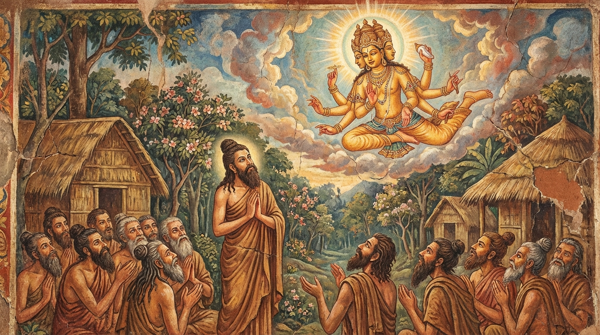

9. පරෝසහස්ස ජාතකය (99)
‘පරොසහස්සම්පි සමාගතානං’ යනාදී වශයෙන් එන මේ ජාතක ධර්ම දේශනාව ශාස්තෘන් වහන්සේ ජේතවනාරාමයේ වැඩ වසන සමයේ, පෘතග්ජන පුද්ගලයන් විසින් විචාරන ලද ප්රශ්න පඤ්චකයක් (ප්රශ්න පහක්) අරබයා දේශනා කරන ලද්දකි. මෙහි කථා වස්තුව සරභ ජාතකයෙහි (හෝ සරභංග ජාතකයෙහි - ජා. 1.13.134 ආදිය) මතු හෙළි වනු ඇත. එක් සමයක භික්ෂූන් වහන්සේලා ධර්ම සභාවෙහි රැස්ව, “ඇවැත්නි, දසබලයන් වහන්සේ විසින් සංක්ෂිප්තව දේශනා කරන ලද ධර්මය ධර්මසේනාපති සැරියුත් තෙරුන් වහන්සේ විස්තරාත්මකව පැහැදිලි කළ සේකැ”යි තෙරුන්ගේ ගුණ කථනය කරමින් සිටියහ. ශාස්තෘන් වහන්සේ එතැනට වැඩම කර, “මහණෙනි, දැන් කිනම් කථාවකින් යුතුව හුන්නාහු ද?” යි විමසා, “ස්වාමීනි, මේ නම් කථාවෙනි” යි පැවසූ කල්හි, “මහණෙනි, සැරියුත් තෙරුන් මා විසින් සංක්ෂිප්තව දේශනා කළ දෙය විස්තරාත්මකව ප්රකාශ කළේ දැන් පමණක් නොවේ, පෙර ද ප්රකාශ කළේ ම ය” යි වදාරා අතීත කථාව ගෙනහැර දැක්වූ සේක.
අතීතයේ බරණැස් නුවර බ්රහ්මදත්ත රජු රාජ්ය කරන සමයේ, බෝධිසත්ත්වයෝ උසස් බ්රාහ්මණ කුලයක ඉපිද, තක්සලාවෙන් සියලු ශිල්ප ඉගෙන, කාමයන් අත්හැර ඉසි පැවිද්දෙන් පැවිදිව පඤ්ච අභිඥා සහ අෂ්ට සමාපත්ති උපදවා හිමාලය වනයේ වාසය කළහ. එතුමාට පන්සියයක් තාපස පිරිවර වූහ. එකල ජ්යෙෂ්ඨ අතවැසි තාපසයා වැසි කාලයේ දී තාපස පිරිසගෙන් භාගයක් සමග ලුණු ඇඹුල් සෙවනය පිණිස මිනිස් වාසයට ගියේය. ඒ අතරතුර බෝධිසත්ත්වයන් වහන්සේගේ මරණ කාලය එළැඹියේය. එවිට අතවැසි තාපසවරු “ආචාර්යන් වහන්ස, ඔබ වහන්සේ ලත් විශේෂ ගුණය කවරේ දැ?” යි අධිගමයන් ගැන විමසූහ. බෝධිසත්ත්වයෝ “නත්ථි කිඤ්චි” (කිසිවක් නැත / ආකිඤ්චඤ්ඤායතනය) යැයි පවසා කලුරිය කොට ආභස්සර බ්රහ්ම ලෝකයේ උපන්හ. බෝධිසත්ත්වවරු අරූප සමාපත්ති ලාභීන් වුව ද, අරූප තලයන් බෝධිසත්ත්ව චරිතයට නුසුදුසු ස්ථාන වන බැවින් එහි නූපදිති. අතවැසි තාපසවරු “ආචාර්යන් වහන්සේට විශේෂ අධිගමයක් නැතැ” යි සිතා ශරීරය ආදාහනය කිරීමේදී නිසි සත්කාර සම්මාන නොකළහ.
ජ්යෙෂ්ඨ අතවැසි තාපසයා නැවත පැමිණ “ආචාර්යන් වහන්සේ කොහි දැ?” යි විමසා, මියගිය බව දැනගත් පසු, “ආචාර්යන් වහන්සේගෙන් අධිගමයන් ගැන විමසුවාහු දැ?” යි ඇසීය. “එසේය, අපි විමසුවෙමු.” “කුමක් වදාළේ දැ?” “එතුමන් විසින් ‘කිසිවක් නැත’ (නත්ථි කිඤ්චි) යැයි කියන ලදී, එනිසා අපි එතුමන්ට විශේෂ සත්කාරයක් නොකළෙමු” යි ඔවුහු කීහ. ජ්යෙෂ්ඨ අතවැසියා “ඔබලා ආචාර්යන් වහන්සේගේ වචනයේ අර්ථය නොදන්නාහ. ආචාර්යන් වහන්සේ ආකිඤ්චඤ්ඤායතන සමාපත්තිලාභී ය” යි පැවසීය. ඔහු නැවත නැවත කීව ද ඔවුහු එය නොපිළිගත්හ. බෝධිසත්ත්වයෝ ඒ බව දැන “මේ අඥාන බාලයෝ මාගේ ජ්යෙෂ්ඨ අතවැසියාගේ වචනය නොඅදහති. මම ඔවුන්ට මේ කාරණය ප්රකට කරන්නෙමි” යි බ්රහ්ම ලෝකයෙන් පැමිණ අසපුව මතුපිට අහසේ මහත් වූ ආනුභාවයෙන් සිට, ජ්යෙෂ්ඨ අතවැසියාගේ ප්රඥා මහිමය වර්ණනා කරමින් මෙම ගාථාව වදාළහ.

“එකිනෙකා හමුවී රැස්ව සිටින, ප්රඥාව නොමැති අඥාන මිනිසුන් දහසකට වැඩි පිරිසක් වසර සියයක් තිස්සේ හඬා වැළපුණ ද, ඔවුහු කියන ලද දෙයෙහි අර්ථය නොදනිති. යමෙක් භාෂිතයේ (කියන ලද දෙයෙහි) අර්ථය මැනවින් දැන ගනී ද, ප්රඥාවන්ත වූ ඒ එකම පුරුෂයා ශ්රේෂ්ඨ වන්නේ ය.”
එහි පරොසහස්සම්පි යනු දහසකට අධික සංඛ්යාවක් වුව ද යන්නයි. සමාගතානං යනු රැස්වූවන්ගේ හෙවත් කියන ලද දෙයෙහි අර්ථය දැනගැනීමට නොහැකි බාලයන්ගේ ය. කන්දෙය්යුං තෙ වස්සසතං අපඤ්ඤා යනු එසේ රැස්වූ, ප්රඥාව නැති ඒ බාල තාපසයන් මෙන් අවුරුදු සියයක් හෝ අවුරුදු දහසක් හෝ හැඬුව ද, වැළපුණ ද, එසේ හඬන නමුත් අර්ථය හෝ කාරණය හෝ කිසිසේත් නොදන්නා බව දක්වයි. එකොව සෙය්යො පුරිසො සපඤ්ඤො යනු එවැනි බාලයන් දහසකට වඩා එක් නුවණැති පණ්ඩිත පුරුෂයා ම ශ්රේෂ්ඨ වේ, වඩා උතුම් වේ යන අර්ථයි. කෙබඳු ප්රඥාවන්තයෙක් ද? යො භාසිතස්ස විජානාති අත්ථං - යමෙක් කියන ලද වචනයේ අර්ථය දැනගනී ද (ඔහු ශ්රේෂ්ඨය), මේ ජ්යෙෂ්ඨ අතවැසියා මෙන් ය.
මෙසේ මහාසත්ත්වයෝ අහසේ සිටම ධර්මය දේශනා කොට තාපස සමූහයාට කරුණු අවබෝධ කරවා බ්රහ්ම ලෝකයට ම ගියහ. ඒ තාපසයෝ ද ජීවිත අවසානයේ බ්රහ්ම ලෝකයේ උපන්හ.
ශාස්තෘන් වහන්සේ මේ ධර්ම දේශනාව ගෙනහැර දක්වා ජාතකය පූර්වාපර සන්ධි ගළපා නිම කළ සේක. “එකල ජ්යෙෂ්ඨ අතවැසියා වූයේ දැන් මේ සැරියුත් තෙරුන් ය. මහා බ්රහ්මයා වූයේ මම ම ය.”
පරෝසහස්ස ජාතක වර්ණනාව නව වැනි යි.